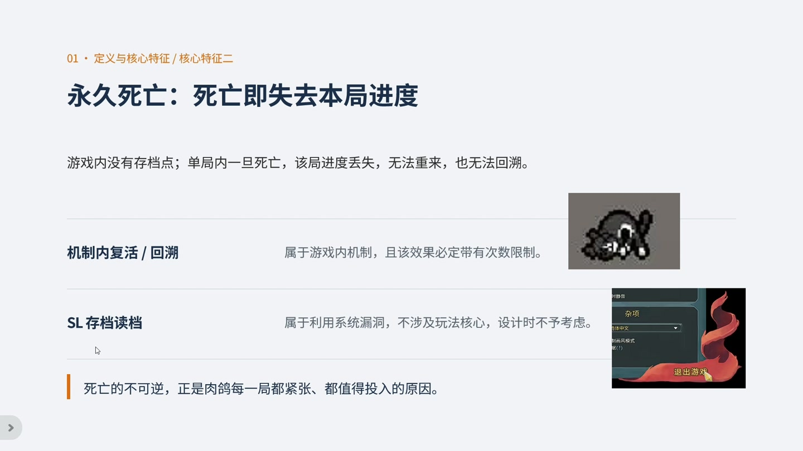

永久死亡：失败的分量
如果没有永久死亡，随机生成就只是一次效率波动：这局抽到的好东西少一点，多打半小时补回来就行。玩家的最优策略会退化成“慢慢磨”，紧张感全部消失。反过来说，永久死亡把“每一局”变成了一次不能重来的押注，随机才有分量。
这一章讲三件事：死亡在这套结构里承担什么功能、复活机制该放在哪条线上、以及死亡的分量怎么配才不会把玩家赶走。
3.1 永久死亡的功能
视频里给的定义很干净：游戏内没有存档点；单局内一旦死亡，该局进度丢失，无法重来，也无法回退。这句话里有两个关键词，决定了它能起什么作用：
- 无存档点：玩家不能在打 Boss 前存一次，失败了读档重来。没有这个限制，Boss 就变成一道可以反复试错的题。
- 不可回退：错误决策的代价会在后续几十分钟里持续兑现，玩家的每一个选择都带重量。
它带来的直接效果是决策的不可撤销性。“这瓶药水现在用还是留给 Boss”之所以是个真问题，是因为用错了不能退回。一旦允许存档，这个问题立刻降级成“试两次，选结果好的那个”。
永久死亡 ≠ 死亡惩罚重
永久死亡描述的是结构的不可逆：本局数据不保留、不能回退。它和“死一次扣多少钱”“死一次掉多少装备”是两件事。你可以永久死亡，但死亡后几乎没有损失（只是重开一局五分钟）；也可以每局很长、死亡损失极大，那叫惩罚重，不叫永久死亡更纯粹。

3.2 边界：什么算存档，什么不算
实践里最容易吵起来的，是“退出游戏保存进度”算不算破坏永久死亡。这条线要划清楚，否则程序实现和策划需求会打架。
| 行为 | 是否破坏永久死亡 | 说明 |
|---|---|---|
| 退出游戏后从当前层重新进入 | 不破坏 | 本质是“断点续玩”，玩家不能通过它改变已经发生的结果 |
| 死亡前主动存档，死亡后读档 | 破坏 | 这是把不可逆变成可逆，整个压力结构失效 |
| 层与层之间自动保存 | 不破坏 | 《以撒》就是每层开头保存：中途退出可从该层起点继续，但死亡依然终止整局。它是断点续玩，不是降低死亡成本 |
| 战斗中允许暂停并回滚到战斗开始 | 破坏 | 等于把每场战斗变成可试错的关卡 |
《以撒》那种“按层保存”值得单独讨论，因为它经常被误读成“降低了死亡成本”。它实际做的是：你可以随时退出，下次从这一层开头继续；一旦死亡，整局仍然结束。它保的是可中断，不是可重来。
真正用来降低失败成本的是另一种做法：把一局切成若干章节，每章结束结算一次（发放局外奖励、写入统计），失败只损失当前章。它不是存档，而是把一次长失败拆成几次短失败。这两件事在实现上很像，在设计意图上完全不同，混着做会两头不讨好。
3.3 三种“复活”，三条完全不同的线
玩家永远会想办法活下来。设计者的任务是决定：哪些活法是我们主动给的，哪些是系统漏洞，哪些是必须堵死的。
机制内复活 / 回滚：属于游戏内容
《以撒》的九命猫是典型：拿到之后角色有多次生命，死了原地复活。视频里讲者特意强调，这是“角色复活”，不是“这一局复活”——道具还在，进度还在，但你确实消耗了一次机会。另一个例子是“后悔药”这类道具，可以让玩家回到上一层重新走。
关键约束：这类效果必须有次数限制，且明确属于道具能力的一部分。没有次数限制的复活，等于把永久死亡删掉了。
SL 存档读档：系统层的小聪明
玩家退出游戏、复制存档、再读回来，绕过死亡。视频里的态度是：这属于利用系统漏洞，不是你玩法设计的核心，可以保留也可以删掉。讲者个人倾向于保留，理由是玩家用这种小手段让自己舒服一点，未必是坏事。
这条判断值得沿用，但要加一个前提：不能让它变成主流玩法。如果社区攻略第一段就是“先备份存档”，说明你的失败成本设计出了问题，而不是玩家太狡猾。
局外继承：这是 Roguelite 的入口
死亡后保留点数、货币、解锁，让下一局的开局更强。它严格来说不是“复活”，但确实降低了死亡的绝对损失。第 5 章会专门讲这套系统的配比，这里只提醒一句：局外继承越强，单局内决策的分量越轻。
3.4 失败成本怎么配
失败成本 = 单局已投入的时间 + 已获得的构筑 + 情绪预期。三者叠起来超过玩家的忍耐阈值，他就会关游戏。不同单局长度对应的安全区间大致如下（这是经验值，不是定律）：
| 单局时长 | 死亡损失 | 需要什么补偿机制 | 典型做法 |
|---|---|---|---|
| 5–10 分钟 | 整局清零可以接受 | 不需要额外补偿 | 短局速开的动作肉鸽 |
| 15–30 分钟 | 整局清零会明显挫败 | 章节化结算 + 局外留下痕迹 | 按章节发放奖励、局外点数 |
| 40 分钟以上 | 整局清零几乎必然导致弃游 | 章节级检查点 + 明确的进度预期 | 分章节推进，每章结算一次 |
注意这张表里的补偿机制都不是“让你不死”，而是把一次大失败切成几次小失败。这个方向比“降低难度”更有效，因为它保住了压力，只是缩短了压力的持续时间。
3.5 死得明白，比死得少更重要
永久死亡的体验由两部分组成：损失有多大，以及玩家能不能理解为什么损失。后者经常被忽略，但它是“再来一局”意愿的真正开关。
视频里没有展开这一层，但这是实践中最容易出问题的地方：玩家死于一个看不清来源的伤害，他不会觉得“我下次注意”，他会觉得“游戏在坑我”。可用的信息设计有三条：
- 伤害来源可见：受击时给出方向指示、伤害类型、攻击者高亮。屏幕外的远程攻击必须有预警。
- 致死原因可归因：结算界面直接写清“死于第 6 层精英的冲锋”，而不是只给一个死亡动画。
- 本局可复盘：展示这局的构筑、关键选择与错过的机会，让玩家看到“如果我当时拿了那件，可能就过了”。
3.6 实现：把“局内”和“局外”彻底分开
永久死亡在代码层的核心是一条边界：单局数据必须可整体销毁，局外数据必须整体存活。这条边界不清楚，就会出现“死了之后金币还在”“重开后 Boss 血条没重置”这类 bug。
using System;
using System.Collections.Generic;
/// <summary>单局数据：死亡时整体丢弃</summary>
[Serializable]
public class RunState
{
public int Seed;
public int Floor;
public int Hp;
public int MaxHp;
public int Gold;
public List<string> Items = new List<string>();
public int ReviveTokens; // 九命猫这类道具给的机会，有上限
public DateTime StartedAt;
}
/// <summary>局外数据：跨局保留，写入存档</summary>
[Serializable]
public class MetaState
{
public int TotalRuns;
public int BestFloor;
public Dictionary<string, int> Unlocked = new Dictionary<string, int>();
public int TalentPoints;
}
public enum RunEndReason { Death, Victory, Abandoned }
public class RunManager
{
public RunState Run { get; private set; }
public MetaState Meta { get; private set; }
public event Action<RunState, RunEndReason> OnRunEnded;
public void BeginRun(int seed)
{
Run = new RunState { Seed = seed, Floor = 1, StartedAt = DateTime.UtcNow };
}
/// <summary>玩家受到致命伤害时调用</summary>
public bool TryConsumeRevive()
{
if (Run.ReviveTokens <= 0) return false;
Run.ReviveTokens--;
Run.Hp = Math.Max(1, Run.MaxHp / 2); // 复活后给一半血，避免立刻再死
return true;
}
public void EndRun(RunEndReason reason)
{
Meta.TotalRuns++;
Meta.BestFloor = Math.Max(Meta.BestFloor, Run.Floor);
// 只在结算时把“该留下的”写进局外，其余一律丢弃
OnRunEnded?.Invoke(Run, reason);
Run = null; // 关键：不留引用，避免状态泄漏
}
}
这段代码里三个地方值得抄：
Run = null：销毁是显式动作，不依赖 GC 时机。UI 若还握着引用，会立刻暴露“死亡后仍能读到旧数据”的 bug。ReviveTokens上限：复活次数是数据，不是逻辑分支。策划改数值就能调整强度，不用改代码。EndRun统一出口：死亡、通关、主动放弃走同一条结算路径，局外数据只在一个地方写入，避免三套结算代码算出三个结果。
3.7 两个必须避开的坑
假死亡：无限复活把压力抽空
复活道具掉率过高、或者复活没有次数限制，玩家会开始“战略性送死”——先冲一波试试，死了复活继续。这时候死亡已经不再是失败，而是一种免费的侦察。判断方法：统计玩家的“主动死亡”比例，如果明显升高，说明复活成本太低了。
长局 + 硬清零：把人赶走
40 分钟一局、死了全没、还没有分段保存，这是最典型的劝退组合。要么缩短单局，要么加分段检查点，要么把单局的构筑留存一部分（变成 Roguelite）。三者至少选一个。
判断练习 3-1
算一下你项目当前的“单局期望时长”和“死亡损失比例”。如果单局超过 30 分钟，检查有没有分段保存；如果有，检查它是否允许玩家通过读档改变已经发生的结果。
实现练习 3-2
给 RunManager 加一个“断点续玩”功能：只在每层开始时序列化 RunState，中途退出直接丢弃。写完后测试三个场景：层内退出、死亡退出、通关退出，确认三种情况下局外数据的写入次数都正确。
判断练习 3-3
复盘一次你自己的死亡。不看攻略，只凭游戏内信息，你能说出“我为什么死”吗？如果说不出来，列出缺的三条信息，写进需求文档。
本章小结
- 永久死亡的价值是让随机产生不可撤销的压力，而不是单纯增加难度。
- 复活分三条线：机制内复活（内容，必须限次）、SL（漏洞，可留但不可成为主流）、局外继承（Roguelite 的入口）。
- 失败成本由单局时长决定，长局必须靠分段检查点把大失败拆成小失败。
- “死得明白”比“死得少”更能提升重开率，伤害来源、致死归因、本局复盘三者缺一不可。
- 代码上必须把
RunState与MetaState彻底分开，销毁要显式。